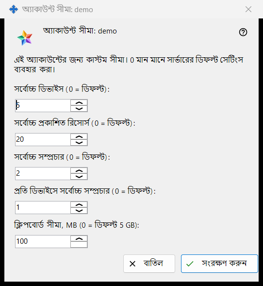
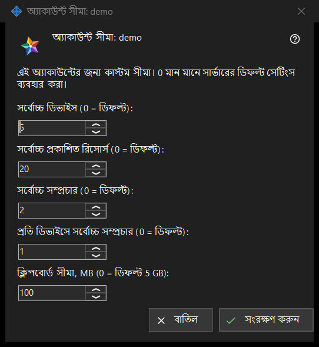

অ্যাকাউন্ট সীমা
এটি কীসের জন্য
আপনার চালানো Media Exchange Server-এর একটি অ্যাকাউন্টের আলাদা সীমা ঠিক করে; 0 রাখা মান সার্ভারের ডিফল্ট অনুসরণ করে। এটি Share Manager সেটিংসের Media Exchange Server পৃষ্ঠায় অ্যাকাউন্ট তালিকার নিচের সীমা.. বোতাম থেকে খোলে, যা অ্যাকাউন্ট বাছলে দেখা যায়। শিরোনামে অ্যাকাউন্টের নাম থাকে: অ্যাকাউন্ট সীমা: <লগইন>।


এই ক্রমে
- অ্যাকাউন্ট বেছে নিয়ে সীমা.. চাপুন।
- যে সীমা বদলাতে চান তার জন্য সংখ্যা দিন, আর সার্ভারের ডিফল্টের জন্য 0 রাখুন।
- সংরক্ষণ করুন চাপুন।
- ফলাফলের লাইন পড়ুন: <লগইন> অ্যাকাউন্টের সীমা সংরক্ষিত হয়েছে।
উপাদানসমূহ
ডিভাইস ও রিসোর্স
সর্বোচ্চ ডিভাইস (0 = ডিফল্ট) ঠিক করে অ্যাকাউন্টে কতগুলো ডিভাইস সাইন ইন থাকতে পারে। সর্বোচ্চ প্রকাশিত রিসোর্স (0 = ডিফল্ট) ঠিক করে অ্যাকাউন্টটি সার্ভারে কতগুলো শেয়ার করা ফোল্ডার ও অন্য রিসোর্স প্রকাশ করতে পারে।
সম্প্রচার
সর্বোচ্চ সম্প্রচার (0 = ডিফল্ট) পুরো অ্যাকাউন্টের সম্প্রচারের সীমা ঠিক করে, আর প্রতি ডিভাইসে সর্বোচ্চ সম্প্রচার (0 = ডিফল্ট) ঠিক করে তার একটি ডিভাইস কতগুলো শুরু করতে পারে।
ক্লিপবোর্ড সীমা
ক্লিপবোর্ড সীমা, MB (0 = ডিফল্ট 5 GB) সার্ভারে অ্যাকাউন্টের ক্লিপবোর্ডে পাঠানো যায় এমন সবচেয়ে বড় মান ঠিক করে, পূর্ণ মেগাবাইটে। ছোট এককে রাখা সীমা, যেমন 512 KB, 0 দেখায় এবং আপনি এই ঘরে হাত না দেওয়া পর্যন্ত তার নিখুঁত আকার বজায় রাখে।
সংরক্ষণ ও বাতিল
সংরক্ষণ করুন অ্যাকাউন্টের নিজস্ব সীমাগুলো একসঙ্গে বদলে দেয়: 0-র চেয়ে বড় প্রতিটি সংখ্যা একটি সীমা হয়, প্রতিটি 0 মানে সার্ভারের ডিফল্ট, আর পাঁচটি শূন্য অ্যাকাউন্টের নিজস্ব মানগুলো সরিয়ে দেয়। বাতিল কিছুই বদলায় না। সার্ভার কোনো মান প্রত্যাখ্যান করলে ফলাফলের লাইন কারণ জানায়, যেমন: সীমা অনুমোদিত নয়: এটি সার্ভার কর্তৃক গৃহীত সীমার মধ্যে একটি পূর্ণসংখ্যা হতে হবে।
ম্যানেজার সেটিংস · SFTP শেয়ারিং সেটিংস · এক্সচেঞ্জ সার্ভার সেটিংস